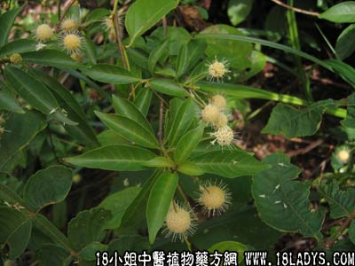

别名：假杨梅、假塘梅。
植物名：风霜树。
生长环境：本品为灌木，喜生于溪旁湿地上，根系发达，可为固堤用，广州近郊不常见。
分布：我国南部。
入药部分：根。
采集期：全年。
自采地点：涌边。
性味：性凉、味淡。
功能：清热、散瘀。
主治、用量和用法：1、痄腮，配伍用；2、牙痛：干根1至2两，煎谁含漱；3、痨伤：干根1至2两，猪瘦肉适量，清水煎服。
验方1：（治痄腮方）水杨梅5钱、入地金牛5钱、木棉皮5钱、蛇泡簕5钱、清水三碗，煎成一碗，分三次服。
（方解）水杨梅根治疗牙痛痄腮，经验良好，本方配木棉树皮去湿热、蛇泡簕清胃热，入地金牛疏风热，协同治疗痄腮，功效显著。
（方歌）水杨梅根治痄腮，金牛蛇泡木棉载，疏风解表除湿热，药到春会自消灾。
验方2：（治痨伤方）水杨梅根5钱、山枝根5钱、五爪龙5钱、红菱根5钱、龙船花根5钱、清水四碗，煎成一碗服。
（方解）此方用水杨梅、横枝根退潮热，散积瘀；红菱根、五爪龙化气除痰；龙船花活血止咳。对痨伤潮热、咳嗽咯血有效。
（方歌）痨伤咳嗽兼潮热，杨梅山枝用根截，五爪红菱龙船花，止咳除痰功伟杰。
验方3：（治牙疮方）水杨梅根1两、入地金牛根5钱、山芝麻5钱、蛇泡簕5钱、煎水频漱服，一日多次。
（方解）牙疮为脾胃火盛或牙齿不洁，火因龋齿受燥热而成。含水杨梅之煎剂有清凉口腔作用、服之能降火，仅一味治牙疮已有效，加入地金牛、山芝麻漱服法，是取其直接作用于牙齿，能洁齿去牙积解毒。蛇泡簕和水杨梅性能相似，四味合用，内外兼施，法堪称善。
（方歌）牙疮肿痛不难医，水杨梅根法要知道哦，金牛泡簕山芝麻，煎服含漱两兼施。